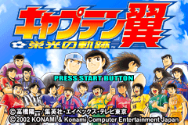

Captain Tsubasa - Eikou no Kiseki (Japan)
Stateless / Passcode 📺 Joybus 🎮 4P Link
Cartridge Identity
- Game Code
AKYJ(FamilyAKY)- Header Title
TSUBASA 2001- Maker / Revision
A4/ rev0- ROM Size
- 8.0 MiB (8,388,608 B)
- Save Media
None / Unknown- SHA-256
b77b54040d382328e8bdf57d022e0ba4455ab3175371925ac61ea17bab6f75a4- Engine / SDK Group
comm-014(25 families)
Screenshots

Link Cable & Multiplayer Communications
This title contains detected communication capabilities: 📺 Joybus 🎮 4P Link.
Detailed protocol specifications, SIO registers, Joybus commands, and MultiBoot sequences are documented in the Link & Multiplayer Reference.
- Multi-Player SIO (4P)
- 16-bit ring network · SIOCNT (
0x04000128) literals:0x0071c4,0x0074ac,0x0074ec· SIODATA32/SIOMULTI0 (0x04000120) literals:0x007200 - GameCube Joybus
- Register literal
REG_JOYSTAT(0x04000158) at offset0x74a288
Cartridge Storage Architecture: Stateless / Passcode
Zero non-volatile battery hardware: This cartridge PCB contains ROM only (no SRAM, Flash, or EEPROM chips). Progression is preserved via on-screen passcodes or session-only gameplay. No
.sav file is generated or required.
ROM Assets, Compression & Audio
- BIOS Compression
- LZ77 (
0x10): 0 streams · RLE (0x30): 0 streams - ROM Pointer Tables
- 38 tables (0 pointing to validated compressed streams)
- SDK Backup Tags
SRAM_V112
Asset Map (formatkit.asset-map.v1)
Download AKYJ-r0-b77b54040d382328.asset-map.json.gz (88,240 B (86.2 KiB)) Verified PASS · 21.46% coverage
| Metric | Bytes / Value | Entries |
|---|---|---|
| Identified | 1,543,565 B (1.47 MiB) (18.40%) | 711 |
| Mapped | 0 B (0.00%) | 0 |
| Opaque | 256,797 B (250.8 KiB) (3.06%) | 1 |
| Unknown | 6,588,246 B (6.28 MiB) (78.54%) | 697 |
| Total ROM Size | 8,388,608 B (8.00 MiB) | 1,409 |
| Coverage % | 21.46% | — |
| Entries w/ Code Refs | 617 / 1,409 (43.79%) | — |
Top Identified Formats: audio.konami-sample (120 · 1,485,613 B (1.42 MiB)) · gfx.gba-palette (590 · 57,760 B (56.4 KiB)) · gba.rom-header (1 · 192 B)
Largest unknown Extents (Headerless / Custom Asset Candidates)
| Offset | Size | Shannon Entropy | Code Refs |
|---|---|---|---|
0x00660218 | 425,264 B (415.3 KiB) | 7.111 bits/B | 0 |
0x005873F0 | 314,660 B (307.3 KiB) | 7.044 bits/B | 0 |
0x005014F0 | 282,576 B (276.0 KiB) | 7.218 bits/B | 0 |
0x00462F64 | 259,296 B (253.2 KiB) | 6.918 bits/B | 0 |
0x005D4134 | 252,632 B (246.7 KiB) | 6.839 bits/B | 0 |
gzip -dk AKYJ-r0-b77b54040d382328.asset-map.json.gz && gbakit map verify rom.gba AKYJ-r0-b77b54040d382328.asset-map.json
gbakit assets export rom.gba --asset-map AKYJ-r0-b77b54040d382328.asset-map.json -o out/Text, Fonts & Scene Data
- Primary Text Encoding
- Compressed / custom-encoded text (
11ASCII strings ·3Shift-JIS runs) - Font & VWF Indicators
- VWF Width Table 1bpp Font · BIOS SWIs: BitUnPack
0x10:8· LZ770x11/12:35· Huffman0x13:1· RLE0x14/15:12 - Scene & Packaging
24ROM pointer tables (≥32 entries,2≥200) ·197relativeu32TOCs ·381OAM metasprite hits
Hardware MMIO Subsystems
ppu_display0x8004294